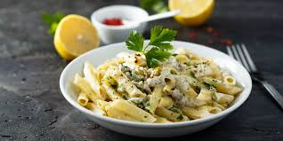

Pizza Recipe
Return to Homepage

Description
I came up with this white spaghetti sauce recipe one night to serve with dried pasta and spicy battered shrimp. My husband lived in Italy for three years, so he's really picky about his Italian cuisine. He loved this sauce and thought I spent all day on dinner. It is really hard to mess up this kind of white sauce. In my opinion, it's similar to Alfredo sauce but without cheese.
Ingredients:
- 1 (.25 ounce) envelope active dry yeast
- 2 tablespoons butter
- 2 tablespoons margarine
- 3 tablespoons all-purpose flour
- 1 cube chicken bouillon, crumbled
- 1 ½ cups boiling water
- 1 cup 2% milk
- ground white pepper to taste
- Raw Pasta
Steps:
- Gather all ingredients.
- Boil the raw pasta in a vessel.As the pasta boils prepare the white sauce.
- Melt butter and margarine in a saucepan over medium-low heat.
- Add flour and crumbled bouillon; stir until well blended, 1 to 2 minutes.
- Continue to cook and stir until thickened and lightly browned, about 5 minutes.
- Increase the heat to medium and whisk in water until smooth.
- Stir in milk; cook and stir until hot and thickened, 2 to 3 more minutes.
- Season with white pepper.
- Add the sauce to the halfboiled pasta and mixwell.